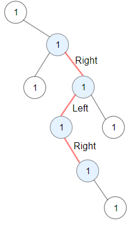
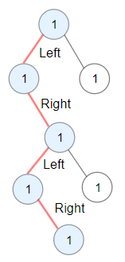

| Category | Difficulty | Likes | Dislikes |
|---|---|---|---|
| Algorithms | Medium | 3715 | 85 |
dynamic-programming | tree | depth-first-search | binary-tree
amazon
You are given the root of a binary tree.
A ZigZag path for a binary tree is defined as follow:
Zigzag length is defined as the number of nodes visited - 1. (A single node has a length of 0).
Return the longest ZigZag path contained in that tree.
Example 1:

Input: root = [1,null,1,1,1,null,null,1,1,null,1,null,null,null,1]
Output: 3
Explanation: Longest ZigZag path in blue nodes (right -> left -> right).Example 2:

Input: root = [1,1,1,null,1,null,null,1,1,null,1]
Output: 4
Explanation: Longest ZigZag path in blue nodes (left -> right -> left -> right).Example 3:
Input: root = [1]
Output: 0
Constraints:
[1, 5 * 104].1 <= Node.val <= 100